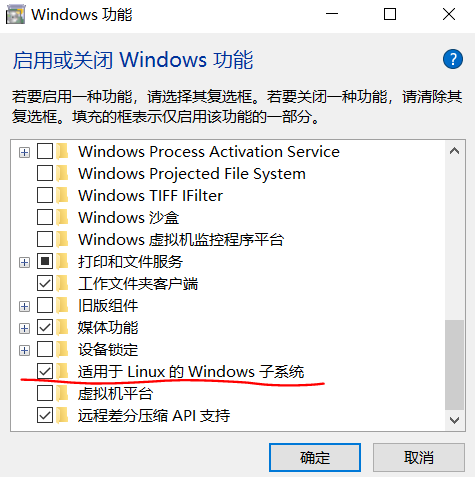
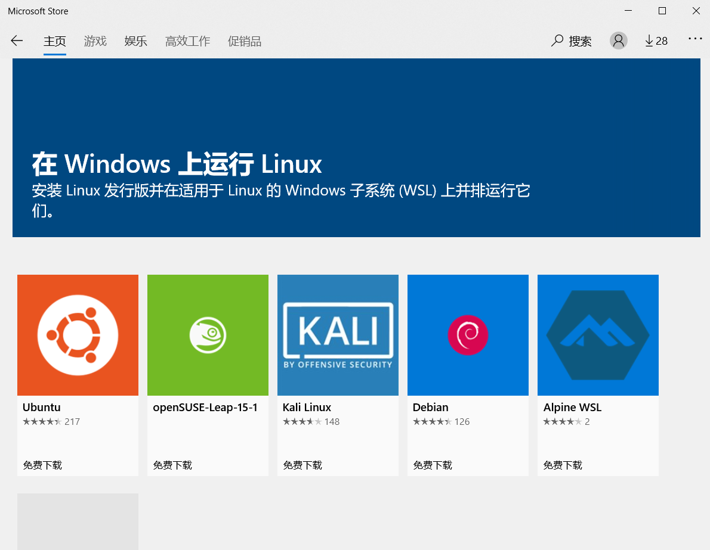
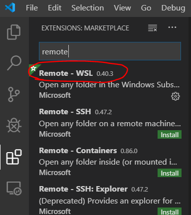
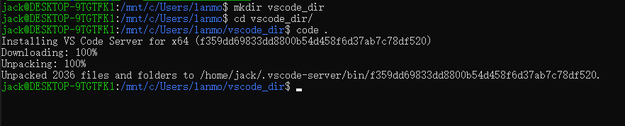
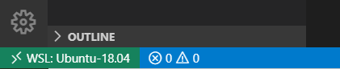

在 Win10 下用 VSCode + WSL 开发，体验还是不错的，一开始看了下官方文档，好长，好复杂。但是实际操作下来，其实很简单，赶紧搞起来，甚香( •̀ ω •́ )✧
安装步骤
首次使用 WSL 需要做一下系统设置
1 | win快捷搜索-> 启用或关闭Windows功能-> 勾选 适用于Linux的Windows子系统 |

到微软商城，搜所 wsl, 可以看到可用的 linux 版本，比如 kail, Ubuntu 等, 点击安装

安装完毕后使用敲击 win 键卡开快捷搜索，输入 wsl 回车，快速打开，第一次打开时需要配置一下子系统用户名密码信息
安装 VSCode + Remote-WSL 插件

启动 WSL 子系统，默认会到 jack@DESKTOP-9TGTFK1:/mnt/c/Windows/system32$ 路径下，选一个你喜欢的路径，我这里新建了目录 vscode_dir 用来测试, 然后输入 code . 第一次输入时 WSL 会安装一些包，然后打开 VSCode。到这里基本就安装完了

新打开的 remote VSCode 界面，注意左下角，如果显示的时下载的 Linux 版本就表明链接成功了
